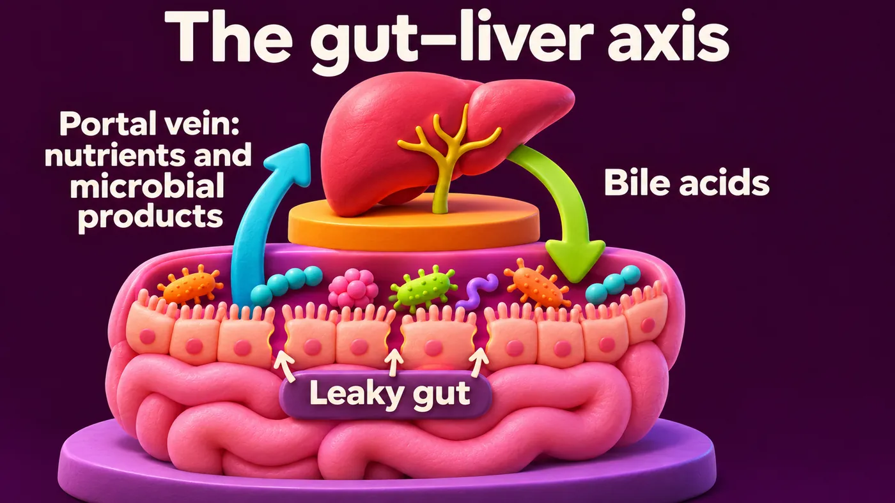
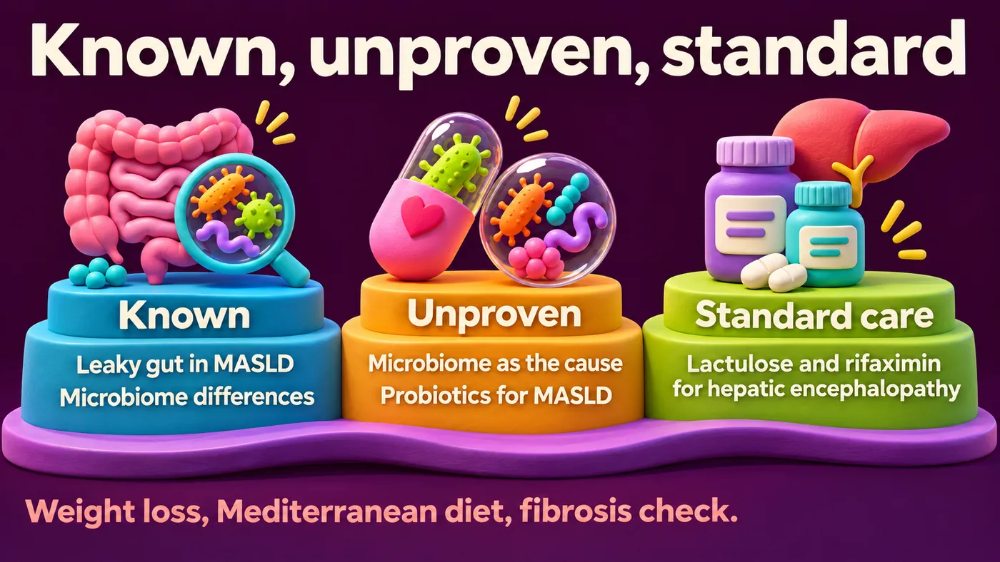

Learning objectives
After this module you should be able to:
- Explain the gut–liver axis in simple terms.
- Describe what is known, and what is still unproven, about the microbiome in MASLD.
- Name the one area where gut-targeted treatment is already standard liver care.
- Give evidence-based advice when a patient with MASLD asks about probiotics.
1Start with a patient: meet Fahad
Fahad is 48. He has type 2 diabetes and obesity. An ultrasound showed a fatty liver. His FIB-4 score is 1.6. He saw an advert for a "liver detox probiotic" and asks if he should take it.
Predict first. What is the most useful next step?
- A. Start the probiotic for 3 months.
- B. Assess his liver fibrosis risk further, and focus on weight, diet and diabetes care.
- C. Order a stool microbiome test.
2The words – what is MASLD?
- MASLD means metabolic dysfunction-associated steatotic liver disease. It replaced the older term NAFLD in 2023 (Rinella, J Hepatol 2023 [1]).
- It means fat in the liver ("steatosis") plus at least one cardiometabolic risk factor, such as overweight, diabetes or prediabetes, high blood pressure, or abnormal blood lipids.
- MASH is the inflamed form. It can lead to scarring (fibrosis) and cirrhosis.
- About 30% of adults worldwide have this condition (Younossi, Hepatology 2023 [2]).
3The gut–liver axis
"Axis" means a two-way link.
- Gut to liver. About three-quarters of the liver's blood comes from the gut, through the portal vein. So the liver is the first organ to receive whatever the gut absorbs, including microbial products.
- Liver to gut. The liver sends bile acids into the gut. Bile acids shape which microbes grow. Microbes then change the bile acids, which act as signals back to the liver.
Think of the portal vein as a direct road from the gut to the liver. When the gut barrier is "leaky", more traffic gets through.

4What we know in MASLD
- People with MASLD have higher gut permeability ("leaky gut") than healthy controls (Miele, Hepatology 2009 [3]).
- Gut microbiome patterns differ in people with advanced fibrosis. One study found a stool signature linked to advanced fibrosis (Loomba, Cell Metab 2017 [4]).
- Some gut bacteria can make alcohol. In one study, certain strains of Klebsiella pneumoniae that make a lot of alcohol were linked to fatty liver disease (Yuan, Cell Metab 2019 [5]).
5What is still unproven
- Most findings are associations. We do not yet know how much the microbiome causes MASLD, and how much MASLD, diabetes, diet and medicines change the microbiome. (Remember "cause or consequence" from Module 2.)
- Probiotic trials in MASLD are mostly small, short and varied. They often report changes in liver enzymes, not hard outcomes like fibrosis.
- The 2024 EASL–EASD–EASO guideline [6] does not include probiotics among its recommended treatments for MASLD.
- Stool microbiome tests are not used to diagnose or stage MASLD.
6Where gut-targeted treatment is already standard
In cirrhosis with hepatic encephalopathy (confusion caused by liver failure), treatments that act on the gut are standard care:
- Lactulose is first-line.
- Rifaximin, an antibiotic that stays mostly in the gut, is added to prevent repeated episodes (Bass, NEJM 2010 [8]; AASLD/EASL 2014 [9]).
This shows the gut–liver axis is real and treatable. But it is advanced liver disease, not early MASLD.

7What really helps in MASLD today
- Weight loss. Losing 7–10% of body weight improves liver fat and inflammation. Losing 10% or more can improve fibrosis (Vilar-Gomez, Gastroenterology 2015 [10]).
- Diet. A Mediterranean-style diet, rich in fibre, vegetables, legumes, whole grains and olive oil. Limit sugary drinks, ultra-processed foods and alcohol (EASL–EASD–EASO 2024 [6]). Fibre also feeds healthy gut microbes (Module 1).
- Activity, and good control of diabetes, blood pressure and lipids.
- Fibrosis assessment. A FIB-4 between 1.3 and 2.67 is "indeterminate". The next step is usually elastography, such as FibroScan (EASL–EASD–EASO 2024 [6]).
- Medicines. In some countries, medicines are now approved for MASH with moderate to advanced fibrosis. A liver specialist decides on these.
Back to Fahad. The answer is B. His FIB-4 of 1.6 needs elastography. His best "gut–liver" treatment is weight loss, a fibre-rich Mediterranean diet and good diabetes care, not a "detox" probiotic.
8Test yourself
Choose an answer to see the explanation. Nothing is recorded.
1. What is the main road from the gut to the liver?
About three-quarters of liver blood flow comes from the gut via the portal vein.
2. MASLD means fatty liver plus:
This is the 2023 multisociety definition.
3. Which gut-targeted treatment is standard care in liver disease?
Rifaximin is added to lactulose in cirrhosis with recurrent encephalopathy.
4. Are probiotics among the recommended MASLD treatments in the 2024 EASL–EASD–EASO guideline?
The guideline focuses on lifestyle, metabolic care, fibrosis assessment and, where approved, MASH medicines.
5. A patient with MASLD has FIB-4 1.6. What is the usual next step?
FIB-4 of 1.3–2.67 is indeterminate.
9Take-home message
The gut and liver talk to each other every day. The science is exciting, but most of it is not yet treatment. For MASLD today: assess fibrosis, lose weight, eat a fibre-rich Mediterranean diet, and control metabolic risk. Diagnose first. Then treat the gut, and the liver.
10Summary
- MASLD = fatty liver + at least one cardiometabolic risk factor. About 30% of adults worldwide.
- Gut–liver axis: portal vein (gut to liver) and bile acids (liver to gut).
- Known: leaky gut and microbiome differences in MASLD. Unproven: cause, and benefit of probiotics.
- Standard gut-targeted care: lactulose and rifaximin for hepatic encephalopathy in cirrhosis.
- MASLD care: weight loss, Mediterranean diet, activity, metabolic control, fibrosis assessment (FIB-4 then elastography).
References
- Rinella ME, et al. A multisociety Delphi consensus statement on new fatty liver disease nomenclature. J Hepatol 2023;79:1542–56. doi:10.1016/j.jhep.2023.06.003
- Younossi ZM, et al. The global epidemiology of nonalcoholic fatty liver disease (NAFLD) and nonalcoholic steatohepatitis (NASH): a systematic review. Hepatology 2023;77(4):1335–47. doi:10.1097/HEP.0000000000000004
- Miele L, et al. Increased intestinal permeability and tight junction alterations in nonalcoholic fatty liver disease. Hepatology 2009;49(6):1877–87. doi:10.1002/hep.22848
- Loomba R, et al. Gut microbiome-based metagenomic signature for non-invasive detection of advanced fibrosis in human nonalcoholic fatty liver disease. Cell Metab 2017;25(5):1054–62. doi:10.1016/j.cmet.2017.04.001
- Yuan J, et al. Fatty liver disease caused by high-alcohol-producing Klebsiella pneumoniae. Cell Metab 2019;30(4):675–88. doi:10.1016/j.cmet.2019.08.018
- EASL–EASD–EASO Clinical Practice Guidelines on the management of MASLD. J Hepatol 2024;81:492–542. doi:10.1016/j.jhep.2024.04.031
- Al-Juhani A, Desoky MS, Almuhaimid AA, et al. Efficacy of gut microbiome-targeted therapies in modulating systemic inflammation and low-grade chronic inflammatory states in adults with metabolic disorders: a systematic review. Cureus 2025;17(9):e92881. doi:10.7759/cureus.92881
- Bass NM, et al. Rifaximin treatment in hepatic encephalopathy. N Engl J Med 2010;362(12):1071–81. doi:10.1056/NEJMoa0907893
- Vilstrup H, et al. Hepatic encephalopathy in chronic liver disease: 2014 Practice Guideline by AASLD and EASL. Hepatology 2014;60(2):715–35. doi:10.1002/hep.27210
- Vilar-Gomez E, et al. Weight loss through lifestyle modification significantly reduces features of nonalcoholic steatohepatitis. Gastroenterology 2015;149:367–78. doi:10.1053/j.gastro.2015.04.005
How to cite this module
Desoky M. The gut–liver axis and MASLD. Metabolic Liver Academy, version 1.0. Updated 2026-11-10. Available from: https://metabolicliveracademy.org/modules/gi-gut-liver-axis.html
For education only. This module summarises published evidence and guidelines; it does not replace clinical judgement, full guidelines or local drug labels. It is not accredited for CME credit. Disclaimer.